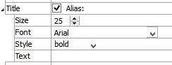
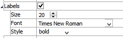

History
Description
A 2D chart of one or more histories that have been taken during model execution.
Attributes
Histories
Specify which histories to include in the plot item.
Histories: A container for the list of histories currently within the model. The field may also be used to add the name of a history not in the model by typing into the edit field and pressing the “plus” button.
[name or #]: The history (name or index number shown in the field label) may be added with the plus button. Its series label is indicated adjacent to the button. When added, a Series attribute is inserted into the “Attributes” list for the plot item.
Series
Set display properties for a single series. There will be one series field for each history item that is added to the plot item using the Histories list.
Series: Delete the series from the plot with the delete button. The adjacent label indicates the name of the series (which will match the name as shown in the Histories list).
Style: Set the line style for the series (options are “Line”, “Mark”, or “Both”).
Line: Set the color, line style, and line thickness for the series (this field is shown when “Line” or “Both” are selected on Style).
Mark: Set the color, shape (options are “Plus”, “Asterisk”, “Diamond”, “Minus”, “Circle”, “Pound”), and size of the marks in the series (this field is shown when “Marks” or “Both” are selected on Style).
X Reverse: Reverse (checked) the \(x\) values in the series.
Y Reverse: Reverse (checked) the \(y\) values in the series.
Alias: Set a name to be used to identify the series in the legend.
Vs
Specify what the history (or histories) will be plotted against.
Vs: Specify what should be used for the x-axis of the plot item. If blank, the default value, which is “step”, is used. Other values entered here should match the field labels as shown in the Histories list.
Begin
Specify the lowest (left end) value for the \(x\) axis.
Begin: Enter the desired value.
End
Specify the highest (right end) value for the \(x\) axis.
End: Enter the desired value.
Skip

Specify an interval for values displayed on the \(x\) axis (show every skipth value; will have no effect if Series-Style is set to “Line”).
Skip: Enter the desired value (default is 0 = don’t skip).
X-Axis (and Y-Axis)

Specify the scale and labeling of the axis (controls are the same for both \(x\) and \(y\) axes).
X-Axis: This is a container for the following attributes.
Log: Use (checked) a logarithmic scale for the axis.
Minimum: Specify the lowest value appearing on the axis. Check “Auto” to set the value automatically.
Maximum: Specify the highest value appearing on the axis. Check “Auto” to set the value automatically.
Inside: Draw a line (checked) at the origin perpendicular to the axis direction in the chart.
Label: Set the text used to identify the axis on the chart.
Exponent: Display (checked) the exponent with the axis label. This is also a container for the following.
Value: Set the exponent automatically when “Auto” is checked. When unchecked, the value can be set in the edit field (if set to 0, the axis label is removed). Tick mark labels are adjusted accordingly.
Title
Control the titling of the plot item.
Title: Show (checked) the chart title at the top of the chart. Set the chart title by entering text in the “Alias:” field. This attribute also contains the following.
Size: Set the size of text in the title.
Font: Set the font face used for the text.
Style: Set the text style (the options are normal, bold, italic, bold-italic).
Labels
Control the appearance of labels on the chart.
Labels: include (checked) axes labels in the chart.
Size: Set the size of text in the label.
Font: Set the font face used for the label text.
Style: Set the text style (the options are normal, bold, italic, bold-italic).
Marks

Control the appearance of axes tick labels on the chart.
Marks: include (checked) axes tick labels in the chart.
Size: Set the size of text in the tick label.
Font: Set the font face used for the tick label text.
Style: Set the text style (the options are normal, bold, italic, bold-italic).
Chart

Set display options for the chart.
Chart: This is a container.
Border: Include (checked) the chart border.
Line: Set border line width and color.Grid: Include (checked) a chart grid at major tickmarks, and set color, line style, and width of the grid lines.
Position: Specifies the bottom and left positions, respectively, of the item’s bottom-left corner, as a percentage of the available rendering area.
If these values are set such that, with the current size setting, the item would exceed the available rendering area, then the size will be automatically downwardly adjusted to fit.
Size: Specify \(x\) and \(y\) size, respectively, of the item, as a percentage of the available rendering area. Also see the position attribute.
Legend
Set display of the item in the plot legend. All plot items, at minimum, have a Title attribute.
Legend: Show (checked) all information about the plot item in the legend.
Title: Show (checked) the title of the plot item in the legend. The “Alias:” field may be used to specify a custom title for the item.
Size: Set the size of text in the legend.
Font: Set the font face used for the text.
Style: Set the text style (the options are normal, bold, italic, bold-italic).
Color: Set the text color.
Beneath Title, the History Chart plot item also provides controls in Legend for Series and Vs. The sub-attributes of each are the same as those for Title.
| Was this helpful? ... | UDEC © 2018, Itasca | Updated: Mar 15, 2024 |